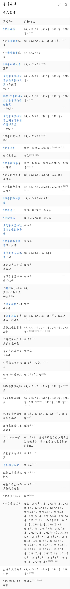

勒布朗·詹姆斯（LeBron James），全名勒布朗·雷蒙·詹姆斯（LeBron Raymone James），1984年12月30日出生于美国俄亥俄州阿克伦，美国职业篮球运动员，司职小前锋，效力于NBA洛杉矶湖人队。 2003年NBA选秀，勒布朗·詹姆斯在首轮第1顺位被克利夫兰骑士队选中，于2009年和2010年两次当选NBA常规赛最有价值球员（MVP）。2010年，詹姆斯转投迈阿密热火队。在效力热火的四年中，詹姆斯4次帮助球队打入NBA总决赛，两夺NBA总冠军，个人荣膺2次常规赛MVP和2次总决赛MVP（FMVP）。2014年，詹姆斯回归骑士。在回归骑士效力的四年中，詹姆斯4次帮助球队打入总决赛，其中于2016年夺得总冠军和FMVP。2018年，詹姆斯转投洛杉矶湖人队。2020年，詹姆斯夺得个人第4个总冠军以及个人第4个FMVP。 2021年，詹姆斯入选75大巨星。 2023年，詹姆斯成为NBA历史得分王，并夺得季中赛冠军和季中赛MVP。 2024年，詹姆斯职业生涯达成4万分里程碑，是NBA历史首位生涯总得分达到4万分的球员。 勒布朗·詹姆斯篮球智商极高、突破犀利，拥有出色的视野和传球技术，被认为是NBA有史以来最为全能的球员之一
詹姆斯在阿克伦加入了圣文森特·圣玛丽高中，他在打球的头一年就成为了先发球员。所在球队取得27胜0负的战绩，决赛中73-55大胜对手，赢得州冠军，决赛中詹姆斯得25分9个篮板以及4次助攻。整个赛季，平均得18分6个篮板。
第二个赛季，詹姆斯带领球队获得26胜1负的战绩，并在决赛中以63-53击败对手，赢得了州冠军，球队被《今日美国》评为25强中的第五位。詹姆斯也因此入选《今日美国》全美第一球队阵容。这个赛季詹姆斯平均得25.2分、7.2个篮板、5.8次助攻和3.8次抢断。另外，詹姆斯还入选了俄亥俄州橄榄球第一球队阵容。
高三篮球赛季开始以前，詹姆斯还带领橄榄球队打进了州半决赛，但是不幸在比赛中弄伤了左手食指。因为圣文森-圣玛丽高中的生源大增使得球队不得不升级到更具挑战性的二级联赛（俄亥俄州的高中篮球根据生源多少分为四个不同等级的联赛）。获得23胜4负的战绩，在分区赛第二轮中以63-71输给了辛辛那提的罗杰-贝肯队，获得州亚军，詹姆斯这个赛季平均得29分8.3个篮板5.7次助攻以及3.3次抢断。正是在那段时间，包括美联社在内都管他叫起了绰号“国王詹姆斯（King James）”。 [10]他出现在《灌篮》（SLAM）杂志封面上，这是他全国性的曝光的开端。
高四时，詹姆斯带领球队取得25胜1负的惊人战绩，被《今日美国》评为虚拟美国高中篮球冠军。而在此赛季中，唯一的一场落败记录是因为詹姆斯所在的SVSM队因为违规而被判输球。这个赛季中，SVSM赢得了第三个州冠军，在2003年3月22日于俄亥俄州首府哥伦布市进行的最后一场比赛中，球队40-36击败了凯特灵改变队，詹姆斯得25分11个篮板。这个赛季詹姆斯平均得到31.6分、9.6个篮板、4.6次助攻以及3.4次抢断。在拿下橡树山学院队的比赛中，詹姆斯得31分13个篮板以及6次助攻，由此SVSM球队被认为达到美国最高水平。在与来自洛杉矶的罗切斯特高中比赛中，詹姆斯得52分，投球命中率到达35投21中。2002年夏天AAU篮球比赛中，詹姆斯的左手手腕不幸受伤。截止那时为止，詹姆斯已经出现在了体育画报和ESPN杂志的封面上。他的受欢迎程度之高，导致他的球队不得不将他们练习的场地从学校体育馆迁至临近的阿克伦大学的James A. Rhodes球馆。像沙奎尔·奥尼尔这样的NBA球星也来观看比赛，而詹姆斯的一些比赛甚至在ESPN2全国直播和地方付费频道上转播。
詹姆斯史无前例地三度入选全美第一队，也三度当选俄亥俄州篮球先生。他得到了麦当劳全美高中明星赛、美国高中圆球经典赛和乔丹高中慈善赛的MVP的荣誉。因为参加了两次以上的高中全明星赛，詹姆斯自动丧失了进入NCAA的资格。詹姆斯高中生涯总共得到2657分、892个篮板以及523次助攻。应美国篮球名人堂之邀，圣文森特-圣玛丽高中将詹姆斯的23号球衣送到了马萨诸塞州的篮球名人堂。
| 时期 | 经历 |
|---|---|
| 骑士1.0时期（2003-2010） | 荣膺最佳新秀，2007年带队进入总决赛，2008，2009年蝉联常规赛MVP |
| 热火时期（2010-2014） | 连续四年进入总决赛，2012，2013年MVP，FMVP，入选NBA第一阵容，NBA第一防守阵容 |
| 骑士2.0时期（2014-2018） | 连续四年进入总决赛，个人连续第八年进入总决赛，2016年总决赛1：3翻盘夺冠，五项个人数据俩队第一 |
| 湖人时期（2018至今） | 2020年再夺总冠军，荣膺FMVP，带队夺得第一届季中赛冠军，荣膺季中赛MVP |
| 常规赛总得分 | 常规赛总篮板 | 常规赛总助攻 | 场均数据 |
| 40474 | 11185 | 11109 | 27.1+7.5+7.4 |
了解详情请点击荣誉记录,我的草率胡萝卜鸡,实在太多了
詹姆斯成立的非赢利性“勒布朗·詹姆斯家庭基金”在过去的几年里都曾举办过不少慈善活动。其中一项名为“KING FOR KIDS Bikeathon”（自行车马拉松）的慈善活动颇受欢迎。除了自行车马拉松赛，詹姆斯基金会还致力于发展家庭活动、推广教育和健身计划，帮助建设城市运动场，为贫困家庭提供“食物与电影之夜”，以及为Akron提供年轻人重返校园所需物资，等等项目。
2015年8月，詹姆斯家庭基金会跟阿克伦大学合作，将为有资格的学生提供4年的奖学金，这是詹姆斯的“我保证”项目。9月，詹姆斯家庭基金会跟Project Learn of Summit County （一个非盈利的为一些成年人提供读书学习机会的机构）合作，帮助当地的一些父母取得高中文凭。10月，詹姆斯与美国第一夫人米歇尔·拉沃恩·奥巴马一起现身阿克伦大学，他们一起谈论了教育的重要性，并且鼓励那些参加了詹姆斯家庭基金会的孩子们完成大学的学业
2018年7月31日，詹姆斯在阿克伦捐建的名为“I Promise”的公立学校正式揭幕。该学校拥有免学费、免费校服、免费自行车和头盔、2英里之内免交通费、免费早午餐和点心、为家庭提供食品储藏室、为家长提供工作安排方面的服务以及为每一位毕业的学生保障进入阿克伦大学的学费8项福利。学校目前设立了三四年级（预计到2022年将涵盖一到八年级），第一批将招收240名学生，每个年级段120人。学校规定每20名学生就要配备一名教师，目前已经招聘了12名教师，加上校长、校长助理、音乐和体育老师等，整个学校有43名职工。学校的课程有科学、技术、工程和数学等，每天9点上课，17点放学。学校一学年是从7月31日到第二年的5月18日，另外还会有为期七周的暑期学校
把你想说的话发送至我的邮箱，代你转述
© Xiao|Shuai|Liu